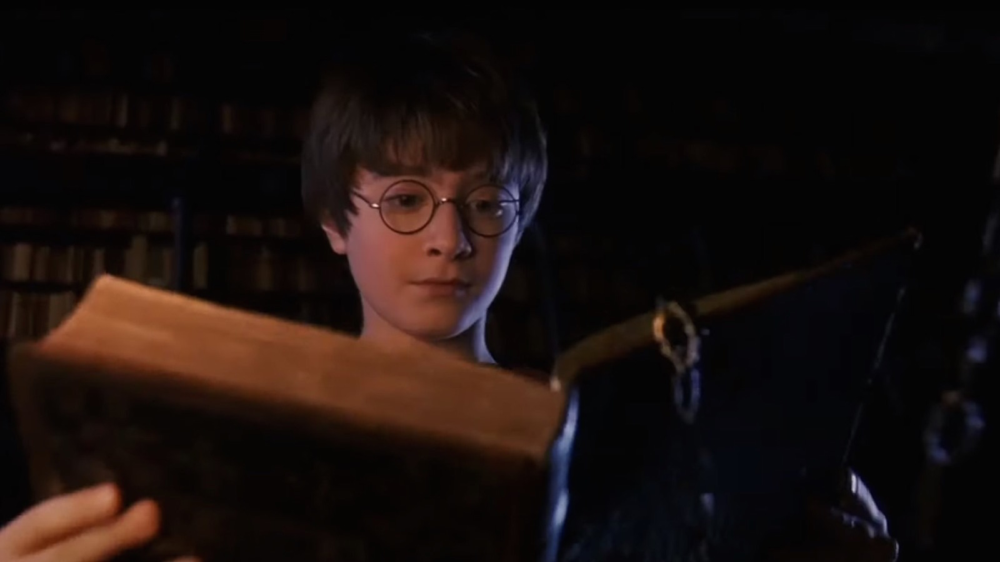

<div class="page-wrapper">
	<div class="page">
		<p>В половине девятого мистер Дурсль взял свой портфель, клюнул миссис Дурсль в щеку и попытался на прощанье поцеловать Дадли, но промахнулся, потому что Дадли впал в ярость, что с ним происходило довольно часто. Он раскачивался взад-вперед на стульчике, ловко выуживал из тарелки кашу и заляпывал ею стены.</p>
		<div class="img-wrapper">
			
			<div class="paragraph-wrapper">
				<p>— Ух, ты моя крошка, — со смехом выдавил из себя мистер Дурсль, выходя из дома.</p>
				<p>Он сел в машину и выехал со двора.</p>
				<p>На углу улицы мистер Дурсль заметил, что происходит что-то странное, — на тротуаре стояла кошка и внимательно изучала лежащую перед ней карту. В первую секунду мистер Дурсль даже не понял, что именно он увидел, но затем, уже миновав кошку, затормозил и резко</p>
			</div>
		</div>
		<p>оглянулся. На углу Тисовой улицы действительно стояла полосатая кошка, но никакой карты видно не было.</p>
		<p>— И привидится же такое! — буркнул мистер Дурсль.</p>
		<p>Наверное, во всем были виноваты мрачное утро и тусклый свет фонаря. На всякий случай мистер Дурсль закрыл глаза, потом открыл их и уставился на кошку. А кошка уставилась на него.</p>
		<p>Мистер Дурсль отвернулся и поехал дальше, продолжая следить за кошкой в зеркало заднего вида. Он заметил, что кошка читает табличку, на которой написано «Тисовая улица». Нет, конечно же не </p>
		<!-- читает, поспешно поправил он самого себя, а просто смотрит на табличку. Ведь кошки не умеют читать — равно как и изучать карты. -->
	</div>
</div>